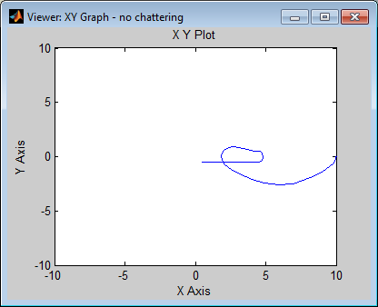

Contents
% Cadeira de Modelação e Simulação % % 2º Trabalho de laboratório % Simulação básica em Matlab/Simulink % % Turno: 4ª feira, das 9h às 11h % % Elementos do grupo: % Gonçalo Vítor Nº73229 % Catarina Cruz Nº73319 % Diogo Brás Nº68212 warning off;
Ex. 2
Simulação do sistema de entradas compostas para diferentes valores de alpha e beta e posterior confirmação, por tentativa e erro, dos resultados analíticos por observação dos gráficos.
vbeta = [0:0.2:1]; % 0 <= beta <=1 beta poderá ser qualquer entre 0 e 1 pelo que achámos por bem simular para 5 valores de beta distintos
vbeta = [0:0.25:1]; alpha = 1; for beta = vbeta T1 = 1+beta; T2= alpha * T1; U1 = -2/(T1 * (1 + alpha)); % Relação descoberta analiticamente entre U1 e T1 U2 = -U1; [u1,t1] = rcos(T1,beta); u1 = U1 * u1; [u2,t2] = rcos(T2,beta); u2 = U2 * u2; t1=t1+T1/2; t2=t2*alpha; t2=t2+T2/2+T1; t2=t2+0.001; tempo = [t1; t2]; simin = [tempo,[u1; u2]]; sim('sis', tempo); figure; hold on; plot(tempo,simout,'b'); plot(tempo,simout1,'r'); plot(tempo,zeros(length(tempo)),'g'); legend('y(t)','y''(t)'); title(['Alpha=1 ;',' Beta=',num2str(beta)]); hold off; figure; hold on; plot(simout,simout1,'b'); plot(simout(1),simout1(1),'go'); plot(simout(end),simout1(end),'ro'); plot(0,0,'rx'); title(['Alpha=1 ;',' Beta=',num2str(beta)]); legend('(y,y'')','Estado inicial','Estado final','Estado final pretendido'); hold off; end
valpha = [0.5:0.5:3]; % alpha > 0; escolhemos um valor inicial em 0.5 visto que alpha não pode tomar o valor de 0.Resultando assim, de acordo com o nosso valor inicial, passo e valor final, 5 valores distintos de alpha. O valor final de alpha foi escolhido para avaliar como alpha evolui após passar do valor favorito que era 1, para esta variável
valpha = [0.5:0.5:2.5]; beta = 0; i=0; for alpha = valpha % atribuições T1 = 1+beta; T2= alpha * T1; U1 = -2/(T1 * (1 + alpha)); % Relação descoberta analiticamente entre U1 e T1 U2 = -U1; [u1,t1] = rcos(T1,beta); % Função que simula o impulso descrito no enunciado Pb(t) u1 = U1 * u1; [u2,t2] = rcos(T2,beta); % Função que simula o impulso descrito no enunciado Pb(t) u2 = U2 * u2; t1=t1+T1/2; t2=t2*alpha; t2=t2+T2/2+T1; t2=t2+0.001; tempo = [t1;t2]; simin = [tempo,[u1; u2]]; sim('sis', tempo) figure; hold on; plot(tempo,simout,'b'); plot(tempo,simout1,'r'); plot(tempo,zeros(length(tempo)),'g'); legend('y(t)','y''(t)'); title(['Alpha=',num2str(alpha),' Beta=0']); hold off; figure; hold on; plot(simout,simout1,'b'); plot(simout(1),simout1(1),'go'); plot(simout(end),simout1(end),'ro'); plot(0,0,'rx'); legend('(y,y'')','Estado inicial','Estado final','Estado final pretendido'); title(['Alpha=',num2str(alpha),' Beta=0']); hold off; end


Conclusão: A estratégia de actuação óptima é tal que se adopte alpha = 1 e beta = 0
Ex 3 - Simulação de uma versão perturbada do sistema com a = 0.99 e b = 0.1
%Estudo por simulação, da dependência do erro de posição/velocidade final % em função de alpha e de beta para sinais de controlo projectados para o % sistema nominal. %Critério de Custo: (em função da duração do sinal de controlo e do %respectivo erro.
vbeta = [0:0.5:1]; valpha = [0.5:0.5:1.5]; simouts = []; % vector onde são inseridas todos os vectores de velocidade % (simout) velocidades de todas as simulações efectuadas de que irá ser % mais tarde usado na pergunta 3 por forma a avaliar alpha = 1; for beta = vbeta T1 = 1+beta; T2= alpha * T1; U1 = -2/(T1 * (1 + alpha)); % Relação descoberta analiticamente entre U1 e T1 U2 = -U1; [u1,t1] = rcos(T1,beta); % Função que simula o impulso descrito no enunciado Pb(t) u1 = U1 * u1; [u2,t2] = rcos(T2,beta); u2 = U2 * u2; t1=t1+T1/2; t2=t2*alpha; t2=t2+T2/2+T1; t2=t2+0.001; tempo = [t1; t2]; simin = [tempo,[u1; u2]]; sim('sis2', tempo); figure; hold on; plot(tempo,simout,'b'); plot(tempo,simout1,'r'); plot(tempo,zeros(length(tempo)),'g'); legend('y(t)','y''(t)'); title(['Alpha=1 ;',' Beta=',num2str(beta)]); hold off; figure; hold on; plot(simout,simout1,'b'); plot(simout(1),simout1(1),'go'); plot(simout(end),simout1(end),'ro'); plot(0,0,'rx'); title(['Alpha=1 ;',' Beta=',num2str(beta)]); legend('(y,y'')','Estado inicial','Estado final','Estado final pretendido'); hold off; end beta = 0; i=0; for alpha = valpha T1 = 1+beta; T2= alpha * T1; U1 = -2/(T1 * (1 + alpha)); % Relação descoberta analiticamente entre U1 e T1 U2 = -U1; [u1,t1] = rcos(T1,beta); % Função que simula o impulso descrito no enunciado Pb(t) u1 = U1 * u1; [u2,t2] = rcos(T2,beta); u2 = U2 * u2; t1=t1+T1/2; t2=t2*alpha; t2=t2+T2/2+T1; t2=t2+0.001; tempo = [t1;t2]; simin = [tempo,[u1; u2]]; sim('sis2', tempo) figure; hold on; plot(tempo,simout,'b'); plot(tempo,simout1,'r'); plot(tempo,zeros(length(tempo)),'g'); legend('y(t)','y''(t)'); title(['Sistema com perturbações para Alpha=',num2str(alpha),' Beta=0']); hold off; figure; hold on; plot(simout,simout1,'b'); plot(simout(1),simout1(1),'go'); plot(simout(end),simout1(end),'ro'); plot(0,0,'rx'); legend('(y,y'')','Estado inicial','Estado final','Estado final pretendido'); title(['Sistema com perturbações para Alpha=',num2str(alpha),' Beta=0']); hold off; end %Conclusão: Estratégia de actuação óptima para o sistema perturbado % Estratégia de actuação: % se custo for esforço gasto pelo braço que lê o disco então ele irá estar relacionado com a aceleração % porque Força = aceleração (à parte da massa que é apenas uma constante, um factor multiplicativo) % pelo que o que o facto de ser uma aceleração grande (neste caso negativa) % para parar o braço, que demora menos tempo e por conseguinte um maior sinal de controlo % ou uma aceleração pequena para parar que demora mais tempo o que exige um menor sinal de controlo

Ex. 5
xmin = -10; xmax = 10; ymin = -10; ymax = 10; alpha=1; beta=0; k_values=[-5 -1 0.0001 1 .1 10] for k=k_values k_ref=k/2; %valor a ser usado para identificação do ponto de comutação sim('sis5'); figure; hold on; plot(tout,y,'b'); plot(tout,dy,'r'); plot(tout,u,'g'); legend('y(t)','y''(t)','Sinal de controlo'); title(['y(0)=',num2str(k)]); hold off; figure; hold on; plot(y,dy,'b'); plot(y(1),dy(1),'go'); plot(y(end),dy(end),'ro'); plot(0,0,'rx'); legend('(y,y'')','Estado inicial','Estado final','Estado final pretendido'); title(['y(0)=',num2str(k)]); hold off; end
k_values = -5.0000 -1.0000 0.0001 1.0000 0.1000 10.0000
%A observação de chattering não é evidente, no entanto pudemos observar que %o sistema de malha fechada levou sempre o estado final para o pretendido. %Este sistema seria mais eficaz que o anterior de malha aberta face a %perturbações em a e b %
Análise da função f para entrada linear e sinusoidal
clear all close all yl = 0.4; k1 = 1/yl; k2 = sqrt(2*k1); % f(10) index = 1; Y=[]; Z=[]; X=[-2:.01:2]; for i=1:size(X,2) Y(i) = f(X(i)); Z(i) = f(sin(X(i))); end plot(X, Y, X, X) title('Sinal linear à entrada'); legend('subsys','y=x'); figure plot(X, Z, X, sin(X)) title('Sinal sinusoidal à entrada'); legend('subsys', 'y=sin(x)');
Ex7
é suposto utilizar k2 para o ganho ou um valor elevado? Falta comparar com o sistema básico em malha fechada, tanto a evoluçao do estado como do sinal de controlo (saida do subsistema) Quantificar tbm o tempo de resposta com sis basico e comparar
clear all close all pos0 = 10; % posição inicial da cabeça do disco ref = [0 0]; % valor da referência para a posição final da cabeça do disco yl = 0.4; k1 = 1/yl; k2 = sqrt(2*k1); xmin = -10; xmax = 10; ymin = -10; ymax = 10; % ambos os XY Graph viewers foram definidos entre xmin xmax e ymin ymax; A % posição inicial foi definida como pos0 = 10, o que nos % permite observar a diferença entre a utilização do subsistema % simplesmente linear e o subsistema com o troço não linear. % Embora seja um valor muito grande pos0 = 10, permite uma melhor % comparação das respostas. % para comparar a degradação da resposta no tempo, definiu-se o tempo de % simulação para 20 s. Compara-se o tempo que demora a atingir uma % velocidade final inferior a uma dada tolerância, neste caso 1E-3 vel_tolerance = 1E-3; k = [10]; k_ref = k/2; sim('sis5'); response = responsetime(tout', dy', vel_tolerance) t_sis_chattering = response(2) % tempo de resposta com sistema com chattering sim('no_chattering'); response = responsetime(tout', vel', vel_tolerance) t_non_lin = response(2) % tempo de resposta com subsistema melhorado (não linear) sim('no_chattering_linearsubsys'); response = responsetime(tout', vel',vel_tolerance) t_lin = response(2) % tempo de resposta com subsistema linear % Um tempo de resposta maior corresponde a uma solução pior, dado que se % pretende minimizar o tempo de deslocamento da cabeaça do disco % Analisando os sinais de controlo no tempo de ambos os subsistemas (melhorado e linear), % nota-se que a amplitude deste sinal no subsistema melhorado é muito % inferior à amplitude no subsistema linear. % Por outro lado, comparando com o sistema da alinea 5, notamos que o tempo % da resposta é inferior ao dos outros dois sistemas.
response =
33.0000 6.3318 0.0005
t_sis_chattering =
6.3318
response =
37.0000 9.8401 -0.0008
t_non_lin =
9.8401
response =
42.0000 11.5834 -0.1502
t_lin =
11.5834
Ex8
clear all close all pos0 = 10; % posição inicial da cabeça do disco yl = 0.4; k1 = 1/yl; k2 = sqrt(2*k1); xmin = -10; xmax = 10; ymin = -10; ymax = 10; vel_tolerance = 1E-3; % ref = [0 0;10 0;10 5]; % sinal constante por troços ref = [0 0; 10 5; 20 0]; % sinal linear por troços sim('no_chattering'); sim('no_chattering_linearsubsys'); % Observando o espaço de fase para os dois sinais de entrada nota-se que a % resposta do sistema linear tende a afastar-se mais das referências % antes de haver a troca do sinal da velocidade (correspondente a uma fase % de correçao da posição). Assim, o sistema não linear apresenta um % comportamento dinâmico melhor, para além de apresentar um tempo de % resposta inferior (como observado na alínear anterior).